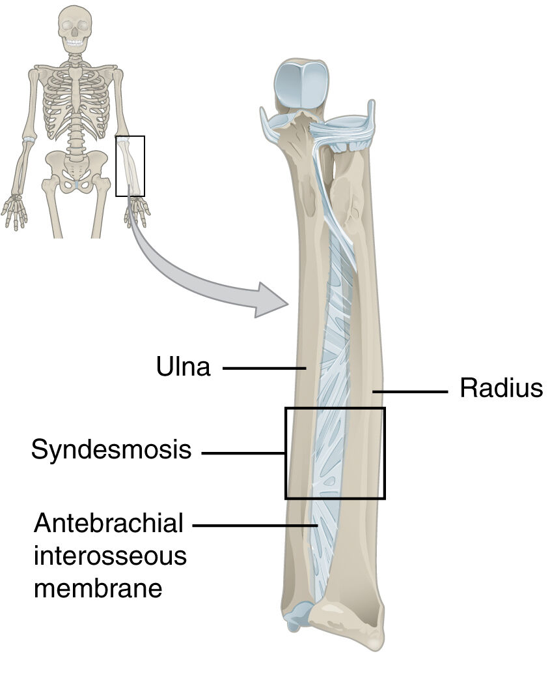
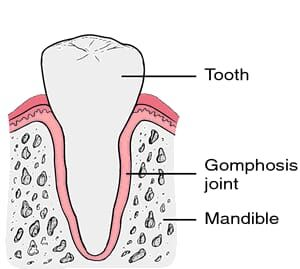
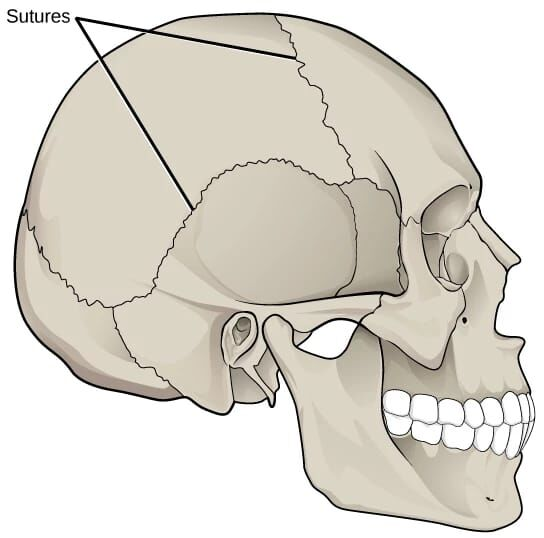
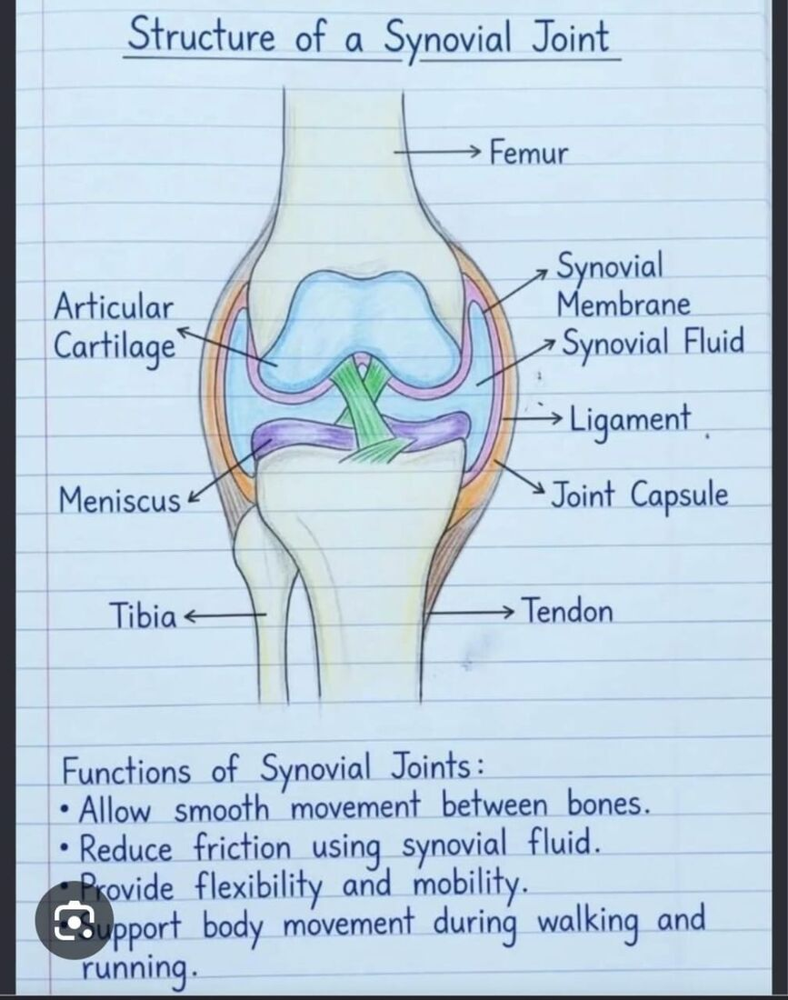
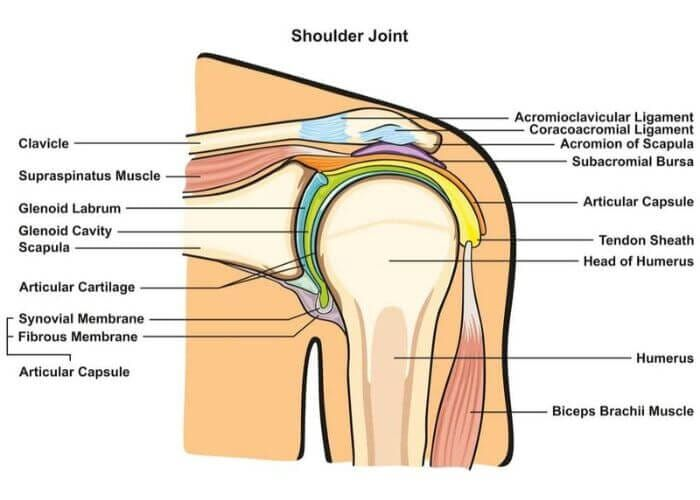
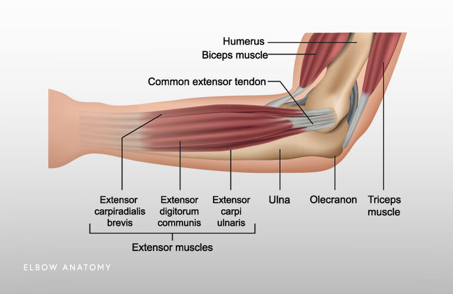
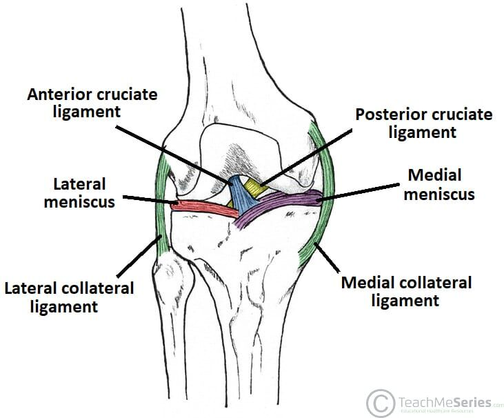
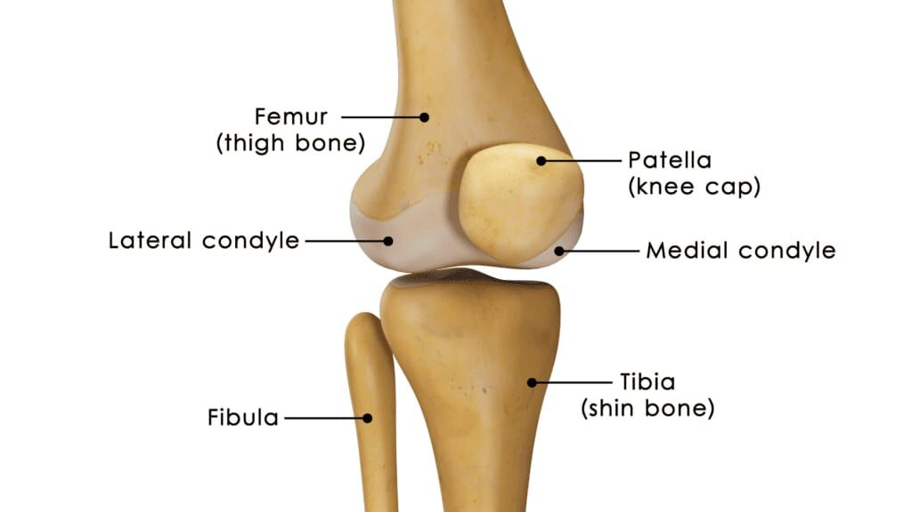

Concept map: see it all at a glance →
Joints (Articulations): Classification
Where bones meet. Sort them by what holds them together, or by how much they move.
| Your syllabus line | Where it is on this page |
|---|---|
| Joints: structural and functional classification | 1 (overview, both classifications), 2 (fibrous, cartilaginous), 3 (synovial) |
| Types of joints | 3 (six synovial types with examples) |
| Articulation | 4 (what articulation means, all movements); 5, 6, 7 (shoulder, elbow, wrist/hand, hip, knee, ankle) |
| Exercise physiology: musculo-skeletal system in yogic practices | 8 (joint-by-joint yoga table and safety rules) |
1AWhat a joint is and does
- A joint (articulation) is the place where two or more bones meet.class
- Functions: connect bones, allow movement, give stability, absorb shock and give flexibility.classPDF
- Not all joints move: some are nearly immovable and mainly give stability and protection.PDF
1BTwo ways to sort joints
| Functional class | Movement | Examples | Job |
|---|---|---|---|
| Synarthrosis | Immovable or nearly | Skull sutures, gomphosis (tooth) | Protection and stabilityPDF |
| Amphiarthrosis | Slightly movable | Pubic symphysis, intervertebral discs | Limited movement, flexibility, shock absorptionPDF |
| Diarthrosis | Freely movable | Shoulder, hip, knee, elbow (most synovial joints) | Large movementPDF |
Source note. The rough match above is a good memory tool but not perfect: a syndesmosis is fibrous yet can allow slight movement (so amphiarthrosis, e.g. the tibiofibular joint), and a synchondrosis such as the first sternocostal joint is nearly immovable. Learn the examples for each type, not just the word match.general
Synarthrosis = Still; Amphiarthrosis = A bit of movement; Diarthrosis = Does everything. Structural: F-C-S = “Fibre, Cartilage, Synovial fluid”.added
Fibrous and Cartilaginous Joints
No joint cavity; held by fibres or cartilage; little or no movement.
2AFibrous joints: held by dense fibrous tissue
| Type | What joins the bones | Example | Movement |
|---|---|---|---|
| Suture | Thin fibrous tissue; interlocking edges | Skull, e.g. coronal suture | None in adults (ossify with age)classPDF |
| Syndesmosis | Ligament or interosseous membrane | Radius–ulna (shaft), distal tibiofibular | SlightclassPDF |
| Gomphosis | Periodontal ligament (peg in socket) | Tooth in jaw socket | NoneclassPDF |

- The interosseous membrane is a sheet of fibres filling the gap between the two forearm bones.class
- It lets the radius turn around the ulna (pronation and supination) while holding the bones together.general
- The same idea at the ankle: the distal tibiofibular syndesmosis holds the ankle mortise together.PDF
- Gomphosis = “bolting together”: the tooth root sits in the alveolar socket and is held by the periodontal ligament.classPDF
- It is considered immovable; the only fibrous joint that is not between two bones.general


- Sutures give strong protection to the brain and allow essentially no movement in adult life.PDF
- In a baby, membranous gaps allow the head to be squeezed at birth and the brain to grow.general
2BCartilaginous joints: held by cartilage
| Type | Cartilage | Examples | Movement |
|---|---|---|---|
| Synchondrosis (primary) | Hyaline cartilage | Epiphyseal (growth) plate; first sternocostal joint | Very limited; often temporaryclassPDF |
| Symphysis (secondary) | Fibrocartilage | Pubic symphysis; intervertebral discs | Limited; absorbs shockclassPDF |
Fibrous = glue, cartilaginous = rubber, synovial = oil-filled hinge. Where the body wants strength and no movement it uses fibrous tissue. Where it wants a little give and shock absorption (spine, pubis) it puts a pad of fibrocartilage between the bones. Where it wants free movement it makes a lubricated cavity. Joint design always follows the job.
Fibrous 3: S-S-G (Suture, Syndesmosis, Gomphosis). Cartilaginous 2: Syn-chondrosis = hyaline (“chon” = cartilage, “syn”); Symphysis = fibrocartilage (pubic symphysis, discs). H before F: Hyaline then Fibro.added
Class notes spell the cartilaginous types as “synchondrosis” (also written sincontrosis) and “symphysis”. Intervertebral disc is a cartilaginous joint (symphysis), not synovial. The facet joints between vertebrae are the synovial ones.
Synovial Joints: Structure and Six Types
The freely movable joints: a lubricated cavity, a capsule and ligaments, in six shapes.
3AStructure of a synovial joint

- Articular cartilage – smooth hyaline cartilage on the bone ends; cuts friction, absorbs shock.class
- Joint cavity – the space between the bones, filled with fluid.class
- Joint capsule – outer fibrous layer (strength) and inner synovial membrane (makes fluid).classPDF
- Synovial fluid – thick lubricant; reduces friction, feeds the cartilage, cushions.class
- Ligaments (bone to bone) stabilise and limit movement; tendons (muscle to bone) transmit muscle pull.PDF
- Accessory structures – menisci (knee), articular discs (TMJ), bursae (fluid sacs).PDF
Why a cavity and fluid? Two bone ends rubbing would wear like two dry planks. The cartilage is a smooth, springy coating; the fluid is oil that also feeds the cartilage (cartilage has no blood supply of its own); the capsule is a sleeve that keeps the oil in; ligaments are straps that hold the bones in the right relation. Class notes say “360 degree movement is possible because of synovial fluid”: more exactly, movement is possible because of the cavity and smooth lubricated surfaces, and the joint shape decides how much.general
3BThe six types of synovial joint
| Type | Shape | Axes | Movements | Examples |
|---|---|---|---|---|
| Plane (gliding) | Flat surfaces | Non-axial | Short slides | Intercarpal, intertarsal, vertebral facet, acromioclavicularPDF |
| Hinge | Cylinder in a groove | 1 (uniaxial) | Flexion, extension | Elbow (humeroulnar), interphalangeal, ankle; knee = modified hingePDF |
| Pivot | Peg in a ring | 1 (uniaxial) | Rotation | Atlanto-axial (C1–C2: head turns), proximal radio-ulnarPDF |
| Condyloid (ellipsoid) | Oval ball in oval cup | 2 (biaxial) | Flexion, extension, abduction, adduction, circumduction; no true rotation | Wrist (radiocarpal), metacarpophalangeal (knuckles)PDF |
| Saddle | Two saddle-shaped surfaces | 2 (biaxial) | Same as condyloid but greater range; opposition | Thumb carpometacarpalPDF |
| Ball-and-socket | Round head in a cup | 3 (multiaxial) | All movements + circumduction | Shoulder, hipPDF |
Order by freedom: Plane → Hinge → Pivot → Condyloid → Saddle → Ball-and-socket = P-H-P-C-S-B = “People Have Pretty Clear Smart Brains” (made up). Axes: 0, 1, 1, 2, 2, 3. Remember the five everyday ones: door hinge (elbow), pivot = turn the head “no”, ball-and-socket = shoulder, hip.added
Condyloid vs saddle: both are biaxial; saddle has more range and gives the thumb its opposition. Knee is not a pure hinge: it is a modified hinge that rotates a little when bent. Elbow complex has two types: hinge (humeroulnar) and pivot (proximal radio-ulnar).
“Types of synovial joints with examples” is a classic 5–10 mark question. Draw a 5-column table (type, shape, axes, movement, example) and add one yoga example, such as hip (ball-and-socket) in baddha konasana.
Articulation and Movements at Joints
The vocabulary used to name and cue every movement.
4AWhat articulation means
- Articulation is the union of bones at a joint. How the two bones meet decides range, direction, stability and function of the joint.PDF
- Examples: humerus + scapula = shoulder; humerus + radius + ulna = elbow; femur + tibia + patella = knee; femur + acetabulum = hip.PDF
- Hinge joints move in one plane (like a door); ball-and-socket in many. The bone swings, turns or glides, and the joint type decides which movement is possible.added
4BAll the movements in four groups
| Group | Movement | Meaning | Example |
|---|---|---|---|
| Gliding | Gliding | Surfaces slide with no angle change | Intercarpal, intertarsalPDF |
| Angular (angle changes) | Flexion / Extension | Decrease / increase the angle between bones | Bend and straighten elbowPDF |
| Abduction / Adduction | Away from / towards the midline | Raise arm sidewaysPDF | |
| Lateral flexion | Trunk bends sideways | Side bend at the waist (intervertebral joints)class | |
| Hyperextension | Extension beyond the neutral position | Gentle spinal extension in bhujangasanaPDF | |
| Circumduction | Flexion + abduction + extension + adduction in sequence: a cone; the distal end draws a circle | Big arm circlePDF | |
| Rotational | Rotation (medial / lateral) | A bone turns around its own long axis | Turn the head; hip rotationPDF |
| Special | Pronation / Supination | Forearm turns: palm down (radius crosses ulna) / palm up | Palm up = holding a bowl of soupPDF |
| Dorsiflexion / Plantarflexion | Top of foot toward the shin / foot points down | Lift toes / stand on tiptoesPDF | |
| Inversion / Eversion | Sole turns inward / outward | Foot turns medially / laterallyPDF | |
| Protraction / Retraction | Forward / backward in the horizontal plane | Scapula forward / toward the spinePDF | |
| Elevation / Depression | Lift / lower a part | Shrug shoulders / lower them; also close or open the jaw (TMJ)PDFclass | |
| Opposition / Reposition | Thumb across the palm to touch the fingertips / back | Pinch, grip, button a shirtPDF |
Source note. Class notes define depression as “moving downward” and elevation as “moving upward” (the shoulder shrug), and the typed notes loosely describe supination, inversion and eversion. The PDF definitions above are the cleaner version. Pronation and supination happen at the radio-ulnar joints, not at the wrist.
4CLearn them as pairs, head to toe
- Pairs halve the list: flexion/extension, abduction/adduction, pronation/supination, dorsiflexion/plantarflexion, inversion/eversion, protraction/retraction, elevation/depression, opposition/reposition; and rotation and circumduction stand alone.PDF
| Body part (head to toe) | Pair to practise | Easy test |
|---|---|---|
| 1. Neck | Flexion / extension | Nod “yes”, look up |
| 2. Shoulder blades | Protraction / retraction | Roll shoulders forward, then squeeze blades together |
| 3. Shoulders | Elevation / depression | Shrug up, then drop down |
| 4. Arms | Abduction / adduction | Arms out sideways, then back to the body; finish with a big arm circle (circumduction) |
| 5. Forearms | Pronation / supination | Palms down, then palms up (soup bowl) |
| 6. Hips | Medial / lateral rotation | Sit, turn toes in, then out |
| 7. Ankles | Dorsiflexion / plantarflexion | Toes to shin, then point |
| 8. Feet | Inversion / eversion | Soles in, then soles out |
Source note. This head-to-toe ladder is an added study aid (your earlier chat about mapping the pairs to body parts could not be recovered). Each pair is paired with a body part where it is easiest to feel; it is not from your textbook.
Shoulder and Elbow
Mobility at the shoulder, stability at the elbow: the best pair to compare.
5AShoulder joint (glenohumeral)

- Type – synovial ball-and-socket, multiaxial. Bones: head of humerus (ball) + glenoid cavity of scapula (socket); the clavicle helps movement and stability.PDF
- Shallow socket → huge range of movement but less bony stability; dislocation is relatively easy.PDF
- Glenoid labrum – fibrocartilage rim that deepens the socket.PDF
- Loose capsule – allows large range. Cartilage (hyaline) coats the humeral head and glenoid.PDF
- Ligaments – glenohumeral (superior, middle, inferior), coracohumeral, transverse humeral, coraco-acromial.PDF
- Subacromial bursa reduces friction under the acromion during arm elevation.PDF
| Movement | Main muscles |
|---|---|
| Flexion | Anterior deltoid, pectoralis major, coracobrachialis, bicepsPDF |
| Extension | Posterior deltoid, latissimus dorsi, teres major, long head of tricepsPDF |
| Abduction | Supraspinatus starts it; middle deltoid takes overPDF |
| Adduction | Pectoralis major, latissimus dorsi, teres majorPDF |
| Medial rotation | Subscapularis, pectoralis major, latissimus dorsi, teres major, anterior deltoidPDF |
| Lateral rotation | Infraspinatus, teres minor, posterior deltoidPDF |
| Circumduction | All four angular movements in sequencePDF |
SITS = rotator cuff: Supraspinatus, Infraspinatus, Teres minor, Subscapularis. Deltoid: Anterior = Flexion, Middle = Abduction, Posterior = Extension (“AF, MA, PE”).PDF
The shoulder is a big ball on a small saucer. The rotator cuff muscles are four small hands that keep the ball centred in the saucer while the big muscles move the arm. That is why the cuff is about dynamic stability, not just movement.PDF
Go deeper · shoulder complex, scapular muscles, nerves and problems
Shoulder complex = glenohumeral + acromioclavicular + sternoclavicular joints + scapulothoracic articulation, all moving together.PDF
| Scapular muscle | Action |
|---|---|
| Trapezius | Elevation, retraction, upward rotation |
| Serratus anterior | Protraction, upward rotation; essential for overhead arm movement |
| Rhomboids | Retraction, downward rotation |
| Levator scapulae | Elevation |
| Nerve | Supplies |
|---|---|
| Axillary | Deltoid, teres minor |
| Suprascapular | Supraspinatus, infraspinatus |
| Upper and lower subscapular | Subscapularis |
| Musculocutaneous | Coracobrachialis, biceps |
Problems: dislocation (anterior is common), rotator cuff injury (supraspinatus tendon), impingement, bursitis, adhesive capsulitis (frozen shoulder).PDF
5BElbow complex

- Three articulations: humero-ulnar, humero-radial, proximal radio-ulnar.PDF
- Type – synovial; mainly hinge; the proximal radio-ulnar joint is a pivot.PDF
- Bones – humerus (trochlea, capitulum, epicondyles), ulna (olecranon, trochlear notch), radius (head).PDF
- Stable – the trochlea fits the trochlear notch; shoulder = mobility, elbow = stability.PDF
- Ligaments – ulnar (medial) collateral, radial (lateral) collateral, annular (ring round the radial head).PDF
- Olecranon – the point of the elbow; triceps attaches here. Carrying angle keeps the forearm slightly away from the body.PDF
| Movement | Main muscles |
|---|---|
| Flexion | Brachialis, biceps brachii, brachioradialisPDF |
| Extension | Triceps brachii; anconeus assistsPDF |
| Pronation | Pronator teres, pronator quadratusPDF |
| Supination | Biceps brachii, supinatorPDF |
Go deeper · nerves and elbow problems
Nerves: musculocutaneous (biceps, brachialis), radial (triceps, extensors), median (flexors, pronators), ulnar (behind the medial epicondyle: the “funny bone”).PDF
Problems: tennis elbow (lateral epicondylitis, common extensor tendon), golfer's elbow (medial epicondylitis), dislocation, olecranon bursitis, nursemaid's elbow in children (annular ligament, sudden pull).PDF
“Describe the shoulder joint” or “elbow joint”: type, bones, articular surfaces, capsule and synovial membrane, ligaments, muscles by movement, stability, one clinical point, one yoga point. Compare: shoulder = mobility, elbow = stability.
Wrist, Hand and Finger Joints
Many small joints: two axes at the wrist, a saddle thumb, hinge fingers.
6AWrist (radiocarpal) joint
| Feature | Detail |
|---|---|
| Region | Not one joint: radiocarpal + midcarpal + intercarpal jointsPDF |
| Radiocarpal joint | Distal radius + articular disc (TFCC) above; scaphoid, lunate, triquetrum below (pisiform does not take part)PDF |
| Type | Synovial condyloid (ellipsoid), two axesPDF |
| Movements | Flexion, extension, radial deviation (abduction), ulnar deviation (adduction), circumductionPDF |
| Carpal bones | Proximal row (thumb to little finger): scaphoid, lunate, triquetrum, pisiform. Distal row: trapezium, trapezoid, capitate, hamatePDF |
| Ligaments | Palmar and dorsal radiocarpal, radial and ulnar collateral, intercarpalPDF |
Pronation and supination are NOT wrist movements; they happen at the radio-ulnar joints and the hand just comes along with the radius. The ulna does not touch the carpals directly: the TFCC disc sits between them.PDF
6BHand and finger joints
| Joint | Between | Type | Movements |
|---|---|---|---|
| CMC (2nd, 3rd) | Metacarpal and distal carpal | Stable | Stability of the handPDF |
| CMC (4th, 5th) | Metacarpal and carpal | More mobile | Cupping the palmPDF |
| Thumb CMC | 1st metacarpal and trapezium | Saddle | Flexion, extension, abduction, adduction, opposition, repositionPDF |
| MCP (knuckles) | Metacarpal head and proximal phalanx | Condyloid | Flexion, extension, abduction, adduction, circumductionPDF |
| PIP, DIP | Between finger phalanges | Hinge | Flexion, extensionPDF |
| Thumb IP | Thumb phalanges (only one IP) | Hinge | Flexion, extensionPDF |
| Muscle | Action |
|---|---|
| Flexor digitorum superficialis (FDS) | Flexes the PIP jointsPDF |
| Flexor digitorum profundus (FDP) | Flexes the DIP jointsPDF |
| Extensor digitorum | Main finger extensorPDF |
| Lumbricals | MCP flexion + IP extension; fine controlPDF |
| Dorsal / palmar interossei | Abduct / adduct the fingersPDF |
FDS = PIP, FDP = DIP; DAB, PAD: Dorsal interossei ABduct, Palmar interossei ADduct. 8 + 5 + 14 = 27 bones: Four fingers × 3 + thumb 2 = 14 phalanges. Carpals: “Some Lovers Try Positions That They Can’t Handle” (scaphoid, lunate, triquetrum, pisiform, trapezium, trapezoid, capitate, hamate).PDFadded
The wrist is a two-way joint (up-down and side-side), the thumb saddle gives a third freedom (opposition), and the finger joints are simple hinges. That is why we can bend fingers like a hinge but spread them and cup the palm only at the knuckles.general
Go deeper · carpal tunnel, snuffbox, nerves and problems
Carpal tunnel: floor and sides = carpal bones; roof = flexor retinaculum; contents = median nerve + flexor tendons. Compression gives carpal tunnel syndrome: numbness, tingling, weak grip (thumb, index, middle, half of ring finger).PDF
Anatomical snuffbox: hollow at the thumb side of the wrist; floor = scaphoid and trapezium. Tenderness suggests a scaphoid fracture (fall on an outstretched hand), which has a poor blood supply.PDF
Grips: power grip (large or heavy objects) and precision grip (thumb opposition, small objects). Fist = MCP, PIP and DIP flexion with the thumb across.PDF
Nerves of the hand: median (thenar muscles, thumb opposition), ulnar (interossei, adductor pollicis, medial two lumbricals), radial (extensors, dorsolateral skin).PDF
Hip, Knee and Ankle
The weight-bearing joints: built for stability and load transfer.
7AHip joint
| Feature | Detail |
|---|---|
| Type | Synovial ball-and-socket; head of femur + acetabulum of the hip bonePDF |
| Why stable | Deep socket + acetabular labrum + strong capsule + strong ligaments + musclesPDF |
| Ligaments | Iliofemoral (Y-shaped; limits extension), pubofemoral (limits abduction), ischiofemoral, ligament of head of femur (teres)PDF |
| Muscles | Flexors: iliopsoas, rectus femoris, sartorius, TFL. Extensors: gluteus maximus, hamstrings. Abductors: gluteus medius and minimus, TFL. Adductors: adductor group, gracilis, pectineus. Lateral rotators: piriformis, obturators, gemelli, quadratus femorisPDF |
| Key actions | Gluteus maximus extends; gluteus medius keeps the pelvis level in one-leg standingPDF |
| Load path | Trunk → pelvis → hip → femur → knee → tibia → ankle → footPDF |
7BKnee joint

- Type – synovial modified hinge: flexion, extension, small rotation when bent.PDF
- Bones – femur + tibia + patella. Tibiofemoral joint and patellofemoral joint.PDF
- Menisci – medial (C-shaped, less mobile, more injured) and lateral (O-shaped, more mobile): cushion, spread load, add stability.PDF
- Cruciate ligaments – ACL stops the tibia sliding forward; PCL stops it sliding backward.PDF
- Collateral ligaments – MCL (medial, attached to medial meniscus) and LCL (lateral) resist side forces.PDF
- Screw-home – a small twist locks the knee in full extension; popliteus unlocks it.PDF
- Patella – sesamoid bone in the quadriceps tendon; protects the front of the knee and improves the quadriceps lever.PDF
- Extensor mechanism – quadriceps → quadriceps tendon → patella → patellar ligament → tibial tuberosity.PDF
- Muscles – quadriceps extend; hamstrings flex (and extend the hip); popliteus unlocks; biceps femoris laterally rotates, semi-muscles medially rotate.PDF

7CAnkle joint
| Feature | Detail |
|---|---|
| Meaning | “Ankle joint” = talocrural joint (tibia + fibula over the talus)PDF |
| Type | Synovial hinge: dorsiflexion and plantarflexionPDF |
| Mortise | Socket made by the distal tibia and fibula (both malleoli) round the talusPDF |
| Ligaments | Lateral: ATFL (most often sprained), CFL, PTFL. Medial: deltoid ligament. Plus the distal tibiofibular syndesmosisPDF |
| Muscles | Dorsiflexors: tibialis anterior, extensor hallucis, extensor digitorum longus. Plantarflexors: gastrocnemius, soleus (balance), tibialis posterior, fibularisPDF |
| Inversion / eversion | Mostly at the subtalar and intertarsal joints, not at the anklePDF |
A-P-M-L: ACL anterior, PCL posterior, MCL medial, LCL lateral. Knee = Femur + Tibia + Patella. Popliteus unlocks. Ankle: deltoid = medial, ATFL-CFL-PTFL = lateral.PDF
The knee does not rotate on its own in poses: rotation comes from the hip. Dorsiflexion and plantarflexion are at the ankle; inversion and eversion are at the foot joints below it. Hip = stable ball-and-socket; shoulder = mobile ball-and-socket.
| Hip | Knee | Ankle | |
|---|---|---|---|
| Type | Ball-and-socket | Modified hinge | Hinge |
| Priority | Stability + mobility + weight bearing | Stability with flexion/extension | Stability, load transfer, balance |
| Main movements | 6 + circumduction | Flexion, extension, small rotation | Dorsiflexion, plantarflexion |
| Common problems | Osteoarthritis, femoral neck fracture, dislocation, FAI | ACL, meniscus, patellofemoral pain, osteoarthritis | Lateral sprain (ATFL), high ankle sprain, Achilles tendinopathy |
Go deeper · hip, knee and ankle problems and nerve supply
Hip: osteoarthritis; femoral neck fracture (risk of avascular necrosis from the medial circumflex femoral artery); dislocation (an emergency); trochanteric bursitis; femoroacetabular impingement (deep flexion). Nerves: femoral, obturator, superior gluteal.PDF
Knee: ACL injury (pivoting, landing), meniscal injury (twisting, locking), patellofemoral pain, patellar tendinopathy, prepatellar bursitis (kneeling).PDF
Ankle: lateral sprain, high ankle sprain (syndesmosis), fracture, Achilles tendinopathy, chronic instability. The Achilles tendon joins gastrocnemius and soleus to the calcaneus.PDF
Joints in Yogic Practice
Joint actions behind common asanas, and the safety rules your notes repeat.
| Asana | Joint actions (from your joint notes) | Key safety point |
|---|---|---|
| Tadasana | Hips and knees near neutral, ankles near neutral | Do not hyperextend the knees; even weight across the feetPDF |
| Vrikshasana | Standing hip stabilises (gluteus medius); raised leg hip flexion + abduction + external rotation | Support knee not hyperextended; wall if ankle unstablePDF |
| Virabhadrasana I and II | Front hip flexion (II also abduction), back leg extended, knee flexed, ankle adjustments | Front knee tracks over the second toe; no inward collapsePDF |
| Trikonasana | Hip abduction and rotation, spinal lateral flexion, knee extension | Range varies between peoplePDF |
| Bhujangasana | Spinal extension, shoulder extension, elbow extension | Controlled; no forcingPDF |
| Paschimottanasana | Hip flexion, spinal flexion, knee extension | Respect hamstring and hip limitsPDF |
| Padmasana / Baddha Konasana | Hip flexion + abduction + external rotation, knee flexion | Never force the knee; rotation must come from the hipPDF |
| Utkatasana, Malasana | Knee and hip flexion with ankle dorsiflexion | Heels lift if dorsiflexion is limited: reduce depth or use a propPDF |
| Adho Mukha Svanasana, Phalakasana, Chaturanga | Wrist extension (weight-bearing), elbow extension (flexion in chaturanga), shoulder flexion | Active hands, keep elbows close, avoid hyperextending the elbowPDF |
| Gomukhasana | Opposite shoulder positions (flexion/abduction/external rotation vs extension/adduction/internal rotation); hip flexion + adduction | Do not force the knees togetherPDF |
- Do not force range. Anatomy varies between people; the shape of a pose is not the goal.PDF
- Hip does the rotation, knee does not. Limited hip mobility overloads the knee.PDF
- A stable joint (elbow) should not be pushed for extra mobility; move within its natural range and avoid repeated hyperextension.PDF
- Mobility, stability and control are equally important; progress gradually into deep poses.PDF
- Wrist: spread the fingers, press through the hands, spread the load, load gradually.PDF
- Stop for sharp or persistent pain, numbness or tingling.PDF
Link joint design to practice: ball-and-socket joints give range but depend on muscles (shoulder) or are stable (hip); hinge joints are built for one plane, so forcing rotation strains ligaments; range depends on bone shape, ligaments, muscle bulk and antagonist tension.
Sources: class notes (joints, typed); Joints – Classification and Movements (handwritten notes converted to doc); Joints: Movements and Articulation (PDF); Shoulder, Elbow, Wrist-Hand-Finger, Hip, Knee and Ankle joint notes (teacher's PDFs); the textbook-pages PDF for Ross & Wilson ch. 17; standard anatomy texts for the “general” tags. Photographic diagrams are from your diagram folder; watermarked stock images were left out. Mnemonics tagged “added” are made up for these notes.